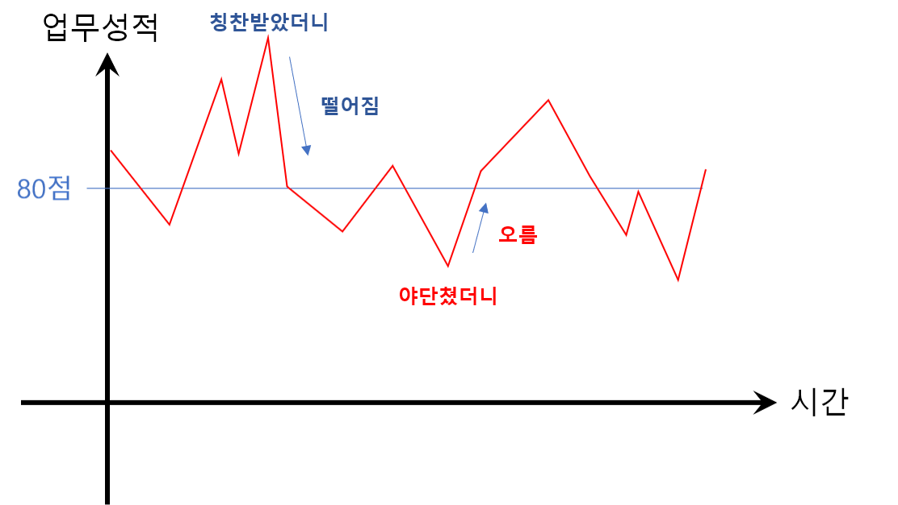

상사가 부하직원을 칭찬하지 않는 이유
비단 회사 뿐 아니라 어느 조직이든지 상급자가 하급자에게 잘한 것에 대한 칭찬을 하는 경우보다는 못한 것에 대한 비난을 하는 경우가 압도적으로 많다.
이런 현상은 문화권이나 교육 수준을 가리지 않는데, 상사가 나빠서 그렇다거나 성숙한 조직문화가 자리잡지 못했다거나 뭐 그런 것이 아니고 그냥 이 현상 자체로 이것이 nature 이기 때문에 그렇다고 결론을 내리게 되었다.
1) ESS(Evolutionary Stable Status)를 이용한 해석
ESS란, 외부에서 뭔 짓을 하더라도 서로 다른 행동전략들이나 생활방식들이 일정한 비율을 유지하게 되는 상태를 이야기하는데, 리챠드 도킨스 아죠시가 지은 "이기적 유전자"라는 책에 보면 "왜 사슴은 사자가 사냥하러 오면 도망만 치고 반격할 생각은 안하나요?"라는 물음에 "그건 ESS가 아니니까"라고 대답한다.
만약에 이 세상에 식량이 감자랑 고구마 밖에 없다고 가정했을 때, 온 세상 사람이 거의 다 감자만 먹게 되면 고구마를 먹는 사람들은 식량이 모자라서 싸우거나 밥 먹기 위해 아등바등 할 필요가 없으므로 유리해진다. 그러면 고구마 먹는 사람들이 점점 늘어나게 되고, 그러다가 반대로 이제 고구마 먹는 사람들이 더 많아지면 고구마 피플이 고구마 가지고 자기들끼리 싸울동안 감자 피플은 큰 노력 없이도 넉넉하게 배를 채울 수 있으니 다시 감자인구가 늘어나고, 이 비율이 균형을 찾게 된다는 것.
균형을 찾은 감자-고구마 세상에다가 포탈을 열어서 이세계의 감자 인구를 대량으로 이주시킨다거나, 감자국에서 역병이 돌아서 감자인구가 급감해도 위에서 이야기했던 과정이 다시 일어나면서 결국 또 균형을 찾게 되는데, 그 균형을 찾은 "안정한 상태(stable status)"를 직장 생활에 대입해보면 알 수 있다.
감자피플을 칭찬하는 상사로, 고구마피플을 비난하는 상사로 바꿔보면, 다른 모든 상사들이 칭찬하고 머리 쓰다듬고 하고 있을 때 쌍욕 박으면서 결재판을 집어던지는 상사가 아웃풋을 빨리 뽑을 수 있을 것이고, 반대로 남들이 다 고함치면서 윽박지를 때 잘했으면 잘했다고 이야기해주는 상사는 부하직원이 신뢰를 바탕으로 업무 성과를 만들어올 것이다. 그러면 이제 위에서처럼 이 두 상사 스타일이 균형을 찾을 것인데, 감자-고구마 균형도 각각이 내는 열량에 따라 반반일 수도 있고 3:7일 수도 있고 또 다른 비율일 수도 있기 때문에 이 칭찬상사-비난상사의 비율도 반반인 경우는 칭찬상사가 가져오는 업무성과와 비난상사가 가져오는 업무성과가 같은 수준일 때만 그렇고 오늘날 우리 생활 속에서 균형을 이룬 칭찬상사-비난상사의 비율로 봐서는 칭찬상사의 업무 퍼포먼스가 비난상사보다 많이 높지는 않은 듯.
이것은 보통 회사의 업무라는 게 "한 쪽 방향이 막혀있어서" 그런 것인데, 예를 들면 거래처에 발주 내는 업무를 하는 직원은 발주를 잘 냈다고 해서 그게 회사나 직원의 큰 이익과 직결되지는 않지만, 반대로 발주를 잘못 내버리면 회사나 그 직원 본인에게 큰 손실을 가져오게 된다. "한 쪽 방향이 막혀있기 때문에" 발생하는 여러 현상들이 많은데, 선물옵션 투자할 때 20만원을 가지고 10만원짜리 선물옵션 두 개를 사서 하나는 숏, 하나는 롱 이렇게 서로 반대 포지션을 잡아서 헷징을 해놓으면, 미수거래가 아닌 이상 돈은 마이너스가 없으니 둘 중 하나는 0원보다 더 내려갈 수 없어서 막혀있지만, 다른 하나가 위에가 열려있으니 이 투자의 기대값은 양수가 되는 것도 같은 맥락이다.
결국 "한 쪽 방향이 막힌" 회사업무(혹은 학업이든 뭐든)의 특성 + ESS 때문에 우리는 상사에게서, 선생님에게서, 부모님에게서 칭찬을 받지 못하게 되는 것이다.
2) 평균회귀를 이용한 해석
예전에 "이코노믹 씽킹"이라는 책을 읽었는데 서두 부분에 이 책 저자인 로버트 프랭크라는 경제학자가 회사 내에서 벌어지는 현상 두 가지를 경제학적으로 해석한 게 있었는데 그 중 하나가 이 내용이었다.

업무 성적이 평균적으로 80점인 부하직원이 있으면, 이 사람은 평균이 80점이니까 이번에 잘했든 못했든 다음번에는 80점을 맞을 것이다. 엄밀하게는, "80점을 맞을 것이다"라는 표현보다는 "80점으로 되돌아가려는 경향을 보일 것이다"라든가 "80점을 맞을 확률이 높다"라고 해야하는 게 맞는 것 같지만 어쨌든 이번이랑 상관없이 다음번에는 80점이라는 것이 중요하다. 못했는데 또 못하면 그 사람은 "평균 80점인 회사원"이 아닌 것이니까, 평균 80점인 회사원은 어쨋거나 80점을 맞을 확률이 제일 높은 것이다.
근데 이게 상사 입장에서는 어떻게 보이냐면, 80점짜리 부하직원이, 어느날 90점 받을 만큼 일을 잘해왔길래 칭찬을 해줬더니 도로아미타불 되어버리고, 또 언제는 70점밖에 못해왔길래 한소리 했더니 그 다음번에 보니까 어? 혼냈더니 잘해오네? 이렇게 되어버리는 것이다. 80점짜리 부하직원은 70점 받은 다음에도 80점을 받을 것이고, 90점 받은 다음에도 80점을 받을 것이고, 0점 맞은 다음에도, 200점 맞은 다음에도 80점을 받을 것인데, 그 때마다 상사는 칭찬해줬더니 못해오고, 혼냈더니 잘해오는 게 반복이 되니까 칭찬을 할 이유도, 필요도 없게 되는 것이다.
결론적으로 잘했을 때 잘했다고 해주는 상사는 칭찬함으로써 야기하는 업무 효율 증대가 남보다 유의미하게 높은, 리더십이 아주 뛰어난 사람이거나, 평균회귀법칙을 이해하고 있는 상태에서 "이 칭찬이 앞으로 가져올 어떤 결과"를 기대하고서 하는 베팅성 칭찬이 아닌 "이 칭찬은 과거에 만든 결과물에 대한 피드백"으로서 하나의 히스토리 혹은 기록의 의미로 칭찬을 해주는 통계적-역사적? 이해도가 높은 사람이거나 해야하는 것이다.
중요한 것은, 어느 쪽이든 상사의 선악이나 부하직원의 업무성과는 무관하다. 상사가 나쁜 사람이라서 혼내고 착한 사람이라서 칭찬하고 그런 것이 아니며, 부하직원이 일을 못해서 혼나고 일을 잘해서 칭찬받는 것이 아니다.
부하직원은 그냥 혼나는 것이고 그것이 nature 인 것이다.